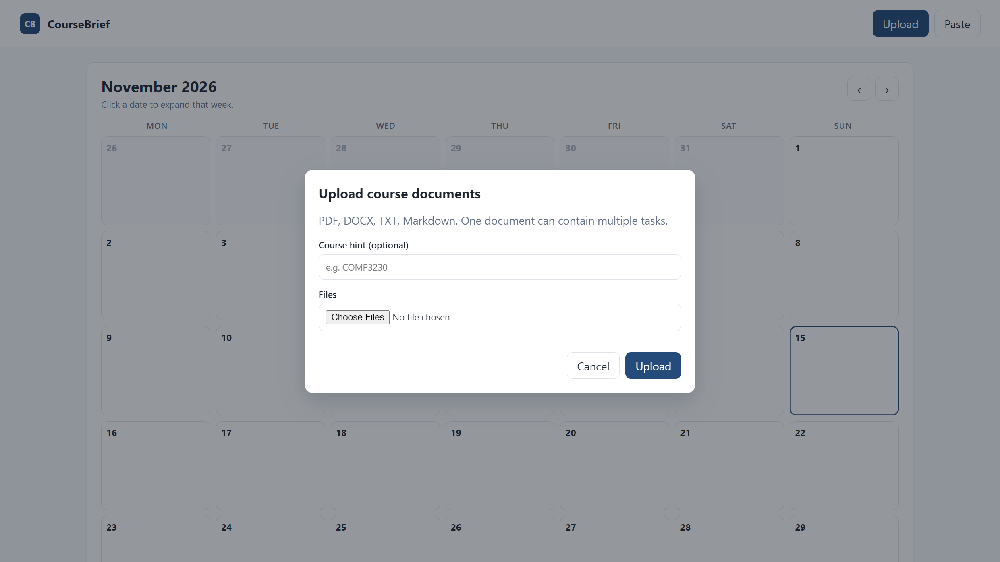
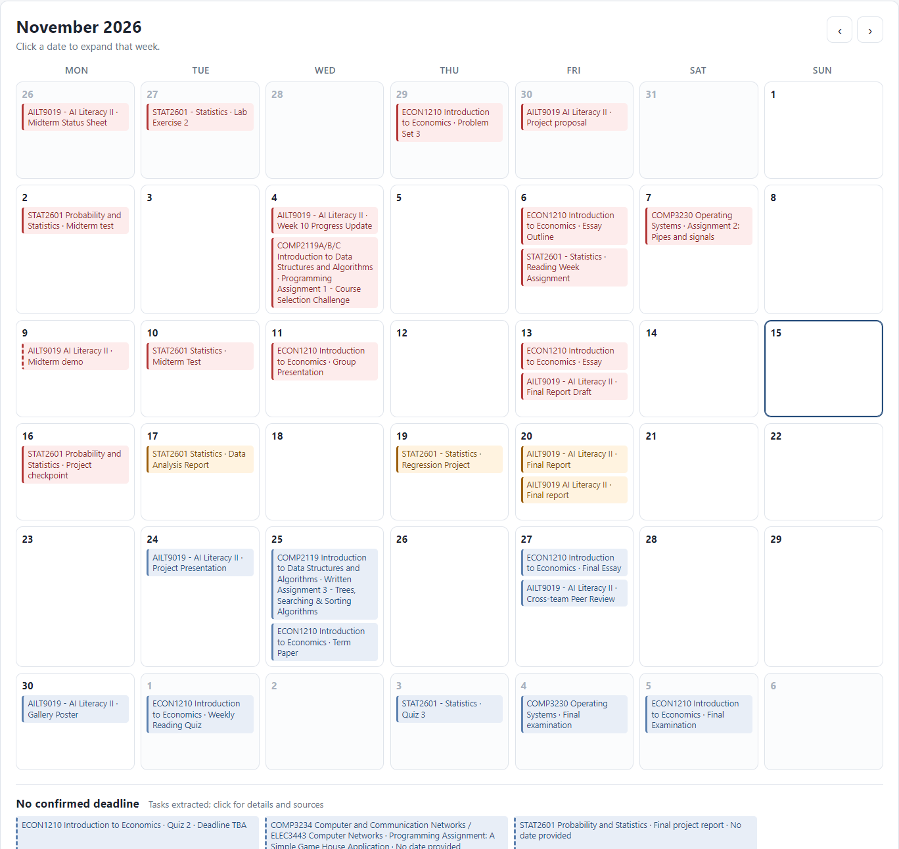
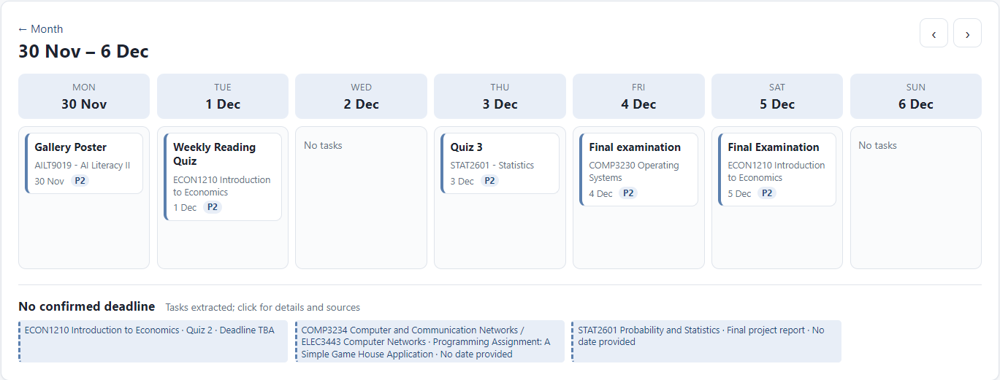
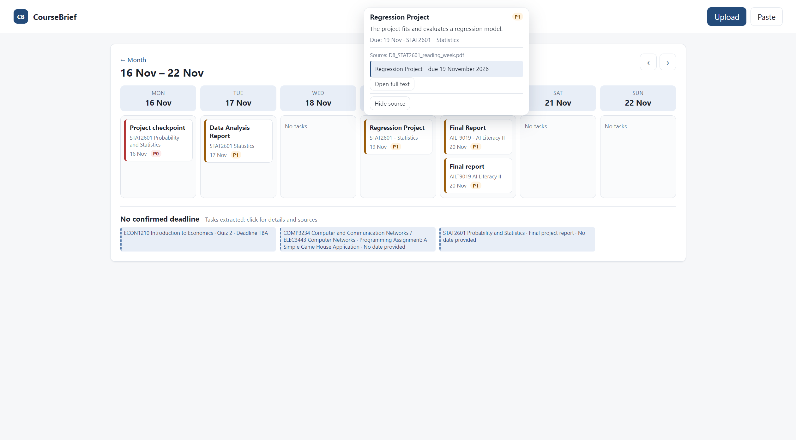
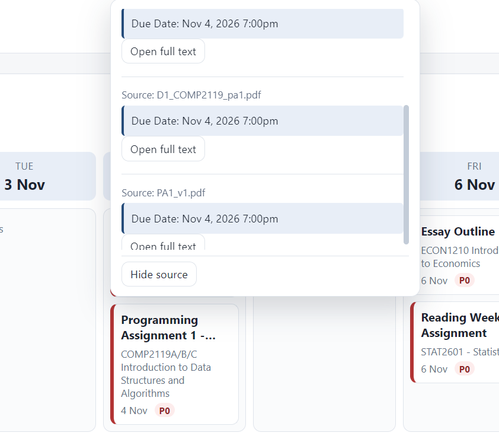
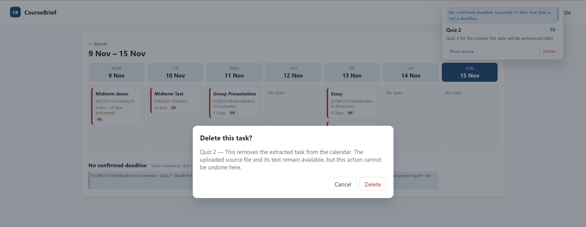
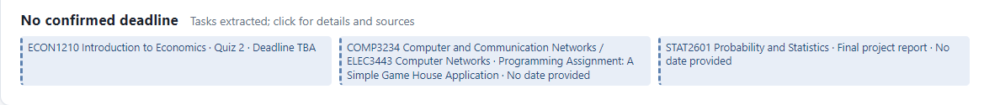
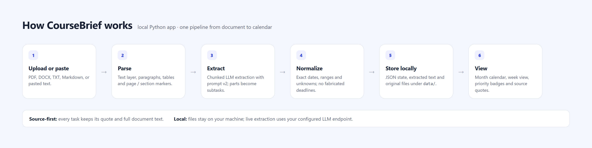
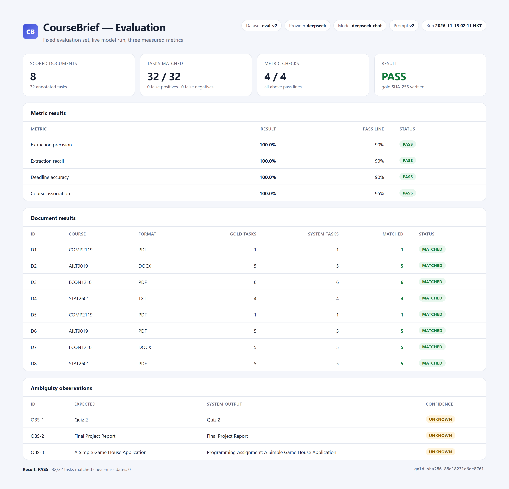

01
Upload or paste
PDF, DOCX, TXT, Markdown, or pasted text. One document can contain multiple tasks.
AILT9019 · AI Literacy II
Upload a syllabus, assignment brief, or announcement. CourseBrief extracts the tasks, normalizes deadlines, and shows them in a month calendar and a week view — with the source quote attached.

The problem
Important dates live in PDFs, DOCX files, announcements, and pasted text. Students rebuild the same list every week, and one missed line can cost a grade.
Key features

PDF, DOCX, TXT, Markdown, or pasted text. One document can contain multiple tasks.

See a whole month at a glance, then zoom into one week. Task cards keep their priority badges and a consistent order.

Every task keeps its source quote, the original filename, and the full extracted text.

When the same task appears in more than one upload, it is shown once, with every source file still available.
Boundary case
CourseBrief does not invent a deadline. Tasks with a TBA date, no date, or a date that needs review stay visible in a separate No confirmed deadline section.
For an undated task, the date shown in the calendar is the import date, not a deadline.

data/ after a task is deleted.
How it works

data/ on your machine.Evaluation
8 course documents, 32 annotated tasks, plus 3 ambiguity observation documents. The latest live run matched every task and passed all four metric checks.
Run with deepseek-chat, prompt v2. All three ambiguity cases were left as
unknown rather than given a fabricated date. Two scored documents are real
COMP2119 assignment handouts; the rest are synthetic course documents.

Privacy and ethics
data/ on your machine.Team